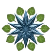

派系 Factions
虽然国家和宗教掌握着大量资源并控制着整个地区，但他们仍必须争夺其追随者的忠诚。除了受到教会和国家的影响外，许多人还受到被称为组织的社会团体的影响。这些团体的规模和目的千差万别--从只对填充其成员的口袋和肚子感兴趣的地方盗贼行会，到拥有私人军队、影响深远的国际商业集团。
最大的组织与较小的主权国家竞争财富、权力和影响力，他们有时甚至与较大的国家竞争。在某些情况下，国家会冒险依靠这些强大的组织，让他们成为政府本身的延伸（例如，切里亚斯的地狱骑士）。在其他情况下，比如红螳螂，整个国家都向这些组织的力量低头。较小的团体，虽然资源不那么丰富，但仍能激发其成员的巨大热情。那些努力扩大规模、影响力或财富的团体经常吸引更多有奉献精神和动力的成员。
下面总结的组织代表了活跃在内海地区的范例。有些组织，如开拓者协会和蛇徽财团，分布广泛而强大，在世界各地都有影响力。而如火烙党和斯科扎尼，则组织混乱或局限于地区内。他们都鼓励冒险者加入队伍，但每个组织能提供给冒险者的好处差距很大。
蛇徽财团 Aspis Consortium

蛇徽财团这个商业机构被构建成确保组织本身的生存比任一成员都更重要。该财团成立初是私人贸易企业，现在已经发展成为内海地区最大的商业企业之一。该组织的大多数成员都是技艺精湛的商人和雇佣兵，在确保利润方面，该组织在无情嗜血方面是出了名的。蛇徽财团与开拓者协会发生过多次冲突。
铃花会 Bellflower Network

声名狼藉的奴隶制在切里亚斯仍是一股强大的经济力量。在这里，半身人作为奴隶特别受重视，因为他们工作努力，而且只占人类劳工的一半空间。因此，自然而然会听说到"铃花会"，这是一个由半身人自由战士建立的组织，接受任何加入其队伍的人，只要他们能帮助铃花会实现将所有奴隶从奴役中解放出来的目标，并帮助努力逃离像切里亚斯这样的压迫者土地。
廷臣之眼秘会 Esoteric Order of the Palatine Eye

这个半秘密组织的总部设在乌斯塔拉夫，其学者和哲学家长期以来一直反对默语魔道（第441页），但最近的事件使他们开始对抗暗夜先驱（Night
Heralds）的邪恶目标。然而，当涉及他们自己的兴趣时，这个组织的成员更喜欢探索和研究隐藏在过去、被尘封的秘密，特别是那些仍然在黄金之路地区等待重新发现的秘密--特别是奥斯里昂。
雄鹰骑士 Eagle Knights

雄鹰骑士是安多安人民的保护者和捍卫者。该组织本身有四个分支——钢隼（保护安多安在边境以外的利益）、黄金军团（安多兰的保卫者和军队的指挥官）、灰海盗（专门打击奴隶贸易的航海人员）和暮光之爪（间谍和秘密特工）。
火烙党 Firebrands

并非所有组织都有核心行动基地和等级制度。松散的自由斗士、游侠英雄和被称为"火烙党"的艺人就是这样一个团体。他们因渴望打击压迫、反对暴政、解放奴隶、拯救被冤枉的人以及与志同道合的英雄进行愉快的合作而团结在一起，同时建立自己的个人声誉和财富。事实证明，这群捍卫者是压迫政府和残酷宗教所难以战胜的。
自由船长 Free Captains

从外部旁观者或船只被抢劫或击沉的商人来说，镣铐海盗可能看起来像一个无组织的祸害。但事实上，这些海盗被一种复杂的准则所约束，即使不能算荣誉，也算是共识，在公海上有朋友总是好的。镣铐群岛由一个自称为自由船长的海盗理事会统治，他们在阿卡迪亚南部海域航行，在涉及到谁可以被袭击和什么可以被击沉时，他们遵循自己的规则--即使在他们的受害者看来，这些规则看起来反复无常又独断。
地狱骑士 Hellknights
在阿维斯坦，有几个不同的雇佣兵组织被统称为“地狱骑士”，他们中的大多数人都驻扎在切利亚斯。这些雇佣兵认为国家法律不容侵犯，并向任何能够支付其价格的人提供执法者服务。他们穿着令人生畏的独特盔甲，以地狱的传说为灵感。但他们认为自己是法律唯一真正的仲裁者。
终焉之墙骑士 Knights of Lastwall

几个世纪以来，终焉之墙一直是对抗贝尔克泽恩兽人和默语魔君等挥之不去的威胁的壁垒。但是当默语暴君逃出监狱后，他给自己在终焉之墙的敌人带来了毁灭性的大灾变。现在，终焉之墙被摧毁了，曾经在那里服务的骑士们失去了家园。在没有家园的情况下，他们组成了一个组织散乱的团体，被称为“终焉之墙骑士”，在需要他们精湛技能的地方，他们承担着对抗默语暴君的亡灵军团的责任。
狮子剑 Lion Blades

塔尔多的狮子剑是一个秘密组织，致力于维护塔尔多和其统治者的利益。他们通过渗透、间谍和暗杀计划来对抗塔尔多的敌人，无论是国外的还是国内的。狮刃的主要目标之一是遏制帝国内部的腐败（除了对他们有用的腐败）；另一个目标是阻止宫廷的组织变得强大到足以改变现状。通过影子学校，狮子剑对新招募的人员进行强化训练，然后再给与他们高度的主动性和自由度。
玛甘比学院 Magaambya

格拉里昂承受着星陨之灾的影响，人们需要很长时间才能恢复。但他们确实恢复过来了，最早从毁灭的灰烬中崛起的机构之一是玛甘比，一个由被称为老法师贾特比的传奇法师创立的奥术学习学院。现在，玛甘比的学者们不仅保留了早期建立的古老魔法传统，而且还保护了整个芒吉人的学习和文化。
暗夜先驱 Night Heralds

暗夜先驱向星光灿烂的夜晚寻求指引，向远在格拉里昂之外的伟力寻求建议和援助。黑色支配者的邪恶外星存在对暗夜先驱特别重要，许多暗夜先驱几乎把这些难以捉摸的生物当作神来崇拜。暗夜先驱们寻找并收集来自古代的晦涩文字和神秘传说，并仔细研究他们在其中发现的秘密，以解开更大的隐藏含义和超越现实的模糊真相。他们的希望是，当世界不可避免地被外星存在影响时，他们会因为服务而得到世界新主人的奖赏。
开拓者协会 Pathfinder Society

现代许多最伟大的探险家和冒险家将他们的发现记录在正在进行的一系列册子中，称为“开拓者编年史”，由开拓者协会自己不定期出版。这个多元化的团体致力于探索世界，支持其在外的特工，并确保他们的发现会被记录下来。该协会经常与更多的雇佣兵蛇徽财团发生冲突。开拓者协会的追求发现经常使特工们陷入正在进行的阴谋中，迫使他们在事件的逐步展开时选择成为英雄或恶棍。
红螳螂 Red Mantis

很容易就能知道一项暗杀行动是否是臭名昭著的红螳螂所为：他们通常用祝福过的锯齿剑杀人，善于在公共场合或被认为安全的圣地瞄准受害者，并采取一系列步骤确保合同要求的人死亡。他们的价格随着任务不同而变化，但无论出价多少，红螳螂从不以合法的统治者为目标，因为他们自己的神，即螳螂神阿卡艾克克，禁止杀死那些天命统治者。
斯科扎尼 Sczarni
斯科扎尼是一个由瓦瑞西亚土匪、走私者和盗贼组成的团体。他们被组织成紧密的家族，除了共同的技能、技术和追求外，几乎没有任何共同之处。他们的罪行集中在偷窃、诈骗和其他相对非暴力的行为上，但由于这些罪行有失控的趋势，他们的计划往往会导致暴力。